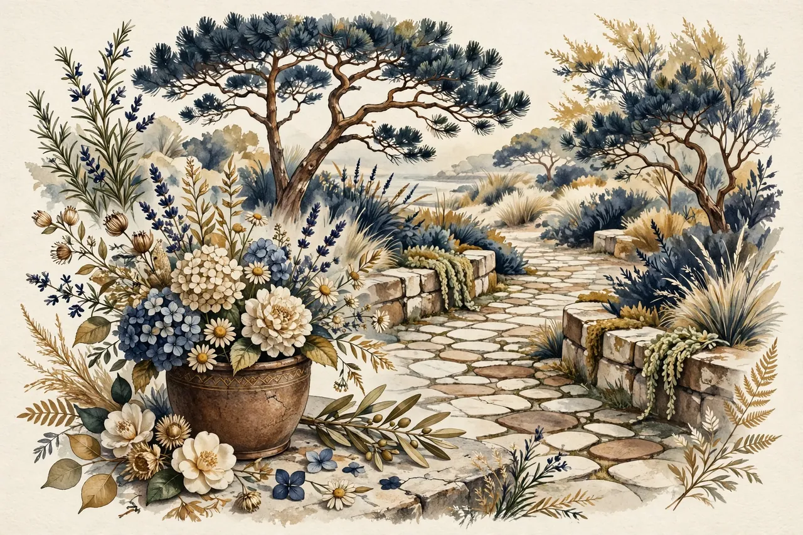

The pleasure of being a beginner
You know where the cards go in a familiar game. Then a new rule arrives, and you have to stop and think. That moment can be frustrating, interesting or both. Being a beginner gives you something specific to learn, rather than another score to chase.
What researchers actually tested
The Synapse Project studied older adults learning demanding real-world skills, including digital photography and quilting. Participants worked on these activities over three months, with the learning groups averaging about 16.5 hours a week. The researchers compared these groups with people doing less demanding activities or social activities. [1]
The combined demanding-learning groups improved on episodic memory, the ability to remember particular experiences and information. But the detailed findings were uneven: photography and the combined photography-and-quilting condition showed significant memory benefits; quilting alone did not show a statistically significant benefit. This was not evidence that every unfamiliar activity improves every thinking skill. [1]
It was also much more than a few minutes in a browser. The project involved sustained instruction, equipment, practice and increasingly complex work. Dear Old Days does not reproduce that programme.
Make a new rule approachable
You can use curiosity without turning it into a health prescription. Choose a game whose idea interests you. Read one rule, try a simple example, and look again when a move surprises you. A useful first goal might be understanding why a move is legal, not winning.
If the game offers a hint or an example, using it is part of learning. You can return to a familiar favourite whenever you like. There is no need to keep raising the difficulty to make your time count.
For a pattern puzzle, for example, first copy a small design. Later, try rotating one piece before placing it. That is a design for learning the puzzle's rules, not a tested memory intervention.
The bottom line: A new skill can be interesting in its own right. Research on intensive real-world learning is encouraging, but it does not show that trying a new Dear Old Days game improves general memory or prevents dementia.
Sources
- Park DC et al. The Impact of Sustained Engagement on Cognitive Function in Older Adults: The Synapse Project. Psychological Science, 2014 issue; published online 2013. Full paper reviewed. https://pmc.ncbi.nlm.nih.gov/articles/PMC4154531/
← Back to Dear Old Days · All articles · About · Privacy policy · Photo credits · Cookie settings